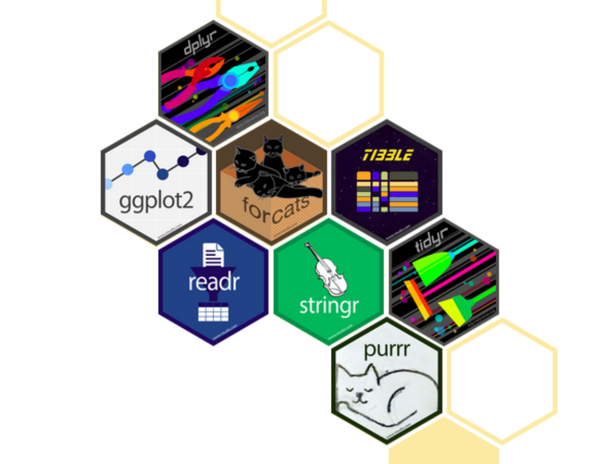
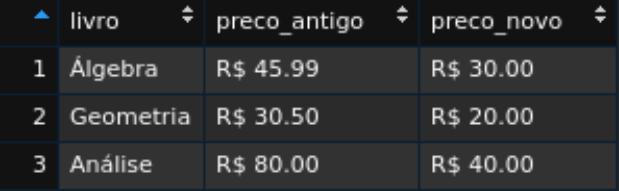
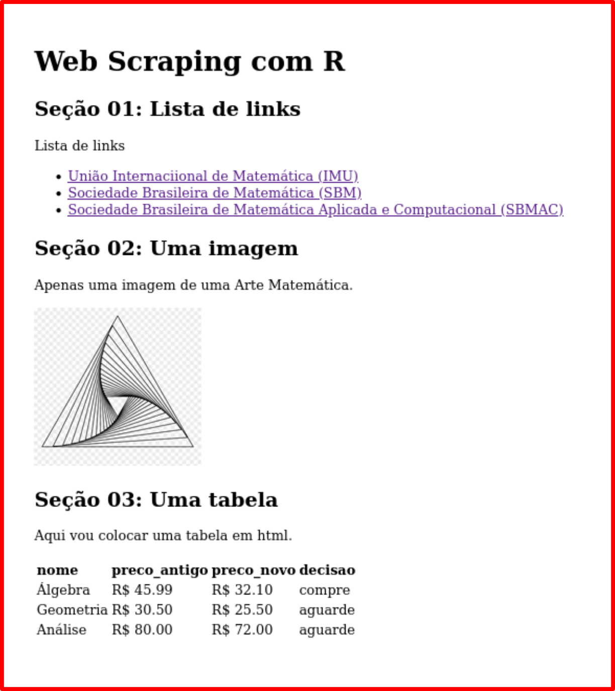

Explanação sucinta (apenas) das funções que usaremos do tidyverse & Cia.
Vimos que o tidyverse é um pacote do R que agrega pacotes com uma certa “filosofia”, por exemplo, o modo de escrever as funções (geralmente com verbos em inglês que remotam à característica dessa função).
São muitos os pacotes que compõem o tidyverse (30 pacotes). Podemos listá-los com o seguinte comando:
tidyverse::tidyverse_packages()
[1] "broom" "cli" "crayon" "dbplyr"
[5] "dplyr" "dtplyr" "forcats" "googledrive"
[9] "googlesheets4" "ggplot2" "haven" "hms"
[13] "httr" "jsonlite" "lubridate" "magrittr"
[17] "modelr" "pillar" "purrr" "readr"
[21] "readxl" "reprex" "rlang" "rstudioapi"
[25] "rvest" "stringr" "tibble" "tidyr"
[29] "xml2" "tidyverse" Entretanto, usaremos, apenas, seis desses pacotes nesse minicurso:
parse_double() que, como o nome sugere, passa um conjunto de caracteres para a categoria numérica. Uma função do R Base que poderia fazer o mesmo papel seria as.numeric().tibbles) especiais e visualizarmos o resultado.tibbles)loops) na programação, como for ou while, por exemplo.No que se refere à utilização desses pacotes, podemos escolher algumas arbordagens…
Uma delas é carregar todo o pacote tidyverse na memória do computador. Mas, isso carrega, apenas, uma parte dos pacotes, como vocês podem perceber ao digitarmos:
── Attaching packages ───────────────────────────── tidyverse 1.3.1 ──✓ ggplot2 3.3.5 ✓ purrr 0.3.4
✓ tibble 3.1.6 ✓ dplyr 1.0.8
✓ tidyr 1.2.0 ✓ stringr 1.4.0
✓ readr 2.1.2 ✓ forcats 0.5.1── Conflicts ──────────────────────────────── tidyverse_conflicts() ──
x tidyr::extract() masks magrittr::extract()
x dplyr::filter() masks stats::filter()
x dplyr::lag() masks stats::lag()
x purrr::set_names() masks magrittr::set_names()Note que foram carregados 8 (oito) pacotes:

E o rvest não está nessa lista. Então, precisaremos carregá-lo também!
Essa é uma abordagem válida e simplifica a escrita dos códigos, tornando-os menos “verbosos”. Uma desvantagem, porém, é que, quando se é iniciante, nem sempre conhecemos de qual pacote pertence determinada função, o que pode atrapalhar os estudos. Além, claro, de carregar a memória do computador com pacotes que não usaremos.
Dessa forma, podemos usar a seguinte abordagem (que usarei no minicurso): não carregaremos o pacote todo (ou seja, não usaremos library(nome-do-pacote)), mas as funções provenientes deles. Para isso, usaremos a seguinte nomenclatura:
pacote::nome_funcao()
A ideia do “pipe” (existem diversas traduções, mas a que me faz comprender a ideia é a de “tubo”, como em uma “encanação”: você conecta as coisas) é, basicamente, escrever o encadeamento do código como pensamos; bem como escrevê-lo em etapas bem delimitadas, trazendo clareza em cada linha de código.
O tidyverse, por meio do pacote magrittr, disponibiliza o pipe %>%, que pode ser acessado por meio do comando Ctrl + Shift + M.
Para entendermos um pouco mais sobre o %>%, lembremos das funções compostas. Ao compormos três funções, por exemplo, escrevemos:
\[ h(g(f(x))) \]
Resolvemos, então, de “dentro” para “fora” da expressão, ou seja, calculamos \(f(x)\), depois \(g(f(x))\) e, por fim \(h(g(f(x)))\).
Mas, nosso raciocínio é mais ou menos assim:
Podemos expressar esse mesmo pensamento usando o %>%, da seguinte forma:
Ou, na prática, escrevemos assim:
Onde \(x\) representa, geralmente, algum conjunto de dados (dataset) ou conjunto de caracteres; e, as funções \(f\), \(g\), \(h\) são algumas das funções dos pacotes do tidyverse.
Por exemplo, suponha que num site leia-se o código html, usando a função read_html(); extraia-se os elementos da tag a, usando a função html_elements(); e, por fim, extraia-se o atributo que armazena os hiperlinks (“href”), com a função html_attr().
A sequêcia dos códigos ficaria assim:
site |>
rvest::read_html() |>
rvest::html_elements("a") |>
rvest::html_attr("href")
Ôpa! O pipe não era %>%? Por que apareceu |>?
O pipe introduzido pelo tidyverse foi tão bem aceito, que o próprio R Base decidiu implementar um. O pipe |> é mais rápido do que o %>%, porém, se precisarmos passar dois argumentos numa mesma função, o pipe %>% é mais conveniente.
Logo, podemos usar de forma indiscriminada qualquer dos pipes, desde que seja conveniente para os fins que desejamos. Em especial, nesse minicurso, daremos preferência ao uso do pipe base,
|>. Só usaremos o pipe domagrittr,%>%, se houver a necessidade de passarmos dois argumentos numa mesma função.
No RStudio Cloud, por padrão, vem o pipe %>%. Você não precisa alterar nada para acompanhar o minicurso!
Vamos, agora, falar um pouco sobre as funções que usaremos nesse minicurso, contextualizando-as em seus respectivos pacotes.
Uma tibble é um data frame (do R Base) melhorado. Grosso modo, é uma tabela muito especial. Com ela, podemos organizar os dados de uma forma que facilite a manipulação dos mesmos pelos pacotes do tidyverse e para o processamento no computador. Para quem possuir interesse, o formato da tibble em questão é o tidy, onde cada coluna representa uma variável; cada linha, uma observação; e, em cada célula há apenas uma observação.
Para nossos fins, basta saber como formar uma tibble e como visualizá-la.
A função tibble(), do pacote de mesmo nome, tibble, cria a tabela desejada. A estrutura dessa função segue o formato:
tibble::tibble(
var_1 = ...,
var_2 = ...,
...
var_n = ...
)Por exemplo, suponha que desejamos construir uma tabela com três variáveis: livro, preco_antigo e preco_novo. Podemos construir uma tibble com:
tabela_livros <- tibble::tibble(
livro = c("Álgebra", "Geometria", "Análise"),
preco_antigo = c("R$ 45.99", "R$ 30.50", "R$ 80.00"),
preco_novo = c("R$ 32.1", "R$ 25.50", "R$ 72.00")
)
tabela_livros
# A tibble: 3 × 3
livro preco_antigo preco_novo
<chr> <chr> <chr>
1 Álgebra R$ 45.99 R$ 32.1
2 Geometria R$ 30.50 R$ 25.50
3 Análise R$ 80.00 R$ 72.00 Notem que a visualização é feita no console do RStudio. Caso queiramos uma visualização mais aprimorada, podemos usar a função view(), da seguinte forma:
tabela_livros |> tibble::view()
A saída assemelha-se a isso (só dá para visualizar no RStuido):

O readr possui funções direcionadas para leitura de dados (csv, tsv e fwf). Todavia, existe uma função, que usaremos em determinadas passagens, para transformar a classe dos dados para numérica (numeric ou double).
O nome dessa função é parse_double().
Vejamos um exemplo.
Suponha que numa extração de dados da web, os valores de três livros fossem classificados como “character”, mas, obviamente, gostaríamos que eles fossem “numeric”.
Para transformar esses valores para dados numéricos, usamos:
valores_num <- valores_web |>
readr::parse_double()
Transformamos e salvamos na variável valores_num. Ao verificarmos a classe, percebemos que os dados passaram a ser numéricos:
class(valores_num)
[1] "numeric"O pacote dplyr fornece uma estruturação de funções que seguem uma certa “gramática de manipulação de dados”. Isso fornece um conjunto consistente de “verbos” (os nomes das funções são verbos , em Inglês, que lembram a sua utilidade) que resolvem os desafios mais comuns na manipulação de dados.
É um pacote fabuloso e que precisaríamos de um curso só para falar dele.
Como o objetivo desse minicurso é sobre Web Scraping, a manipulação dos dados estará contida no processo. Entretanto, manipularemos conjuntos de caracteres e não necessariamente “tibbles”. Portanto, só usaremos algumas poucas funções desse pacote.
Uma delas é a função mutate().
Em inglês, numa tradução livre, a palavra mutate refere-se a “mudança”, “alteração”, etc. Portanto, usaremos a função mutate() se desejamos fazer uma modificação na tibble (usamos dplyr apenas em tibbles).
Para exemplificar, considere a seguinte tabela (modificamos a tabela anterior para que as variáveis fossem numéricas):
Se quisermos acrescentar uma variável que calcula a diferença entre o “preço novo” (preco_novo) e o “preço antigo” (preco_antigo) precisamos usar o mutate. Ela acrescentará uma nova variável (que daremos o nome diferenca) à tabela_livros_mod.
tabela_livros_completa <- tabela_livros_mod |>
dplyr::mutate(
diferenca = preco_novo - preco_antigo
)
tabela_livros_completa
# A tibble: 3 × 4
livro preco_antigo preco_novo diferenca
<chr> <dbl> <dbl> <dbl>
1 Álgebra 46.0 32.1 -13.9
2 Geometria 30.5 25.5 -5
3 Análise 80 72 -8 Observe que, para fazer sentido a diferença entre os valores, estes devem ser numéricos!
Agora, suponha que desejamos criar uma nova variável que estabeleça uma “tomada de decisão”. Se o “preço novo” for 30% mais barato do que o “preço antigo”, deseja-se que apareça a mensagem “compre”. Caso contrário, deseja-se que apareça a mensagem “aguarde”.
Para isso, como podemos notar, precisamos usar uma estrutura “if …, else”, ou seja, “se ocorre ‘condição A’, então ‘faça B’; caso contrário, ‘faça C’”.
O dplyr fornece uma função para isso: if_else(cond., caso-verdade, caso-contrário).
cond., colocamos a condição desejada;caso-verdade, colocamos a mensagem caso a condição desejada seja verdadeira;caso-contrário, colocamos a mensagem caso a condição inicial não seja satisfeita.Portanto, o código fica assim:
tabela_livros_decisao <- tabela_livros_mod |>
dplyr::mutate(
decisao = dplyr::if_else(
preco_novo <= 0.7 * preco_antigo, "compre", "aguarde"
)
)
tabela_livros_decisao
# A tibble: 3 × 4
livro preco_antigo preco_novo decisao
<chr> <dbl> <dbl> <chr>
1 Álgebra 46.0 32.1 compre
2 Geometria 30.5 25.5 aguarde
3 Análise 80 72 aguardeEsse é o principal pacote que usaremos para o web scraping. Ele será responsável por “ler” os códigos html que cada página dispõe, extraindo os “elementos” que desejamos.
Abordaremos, de forma direta, algumas das funções desse pacote. Para isso, vamos usar como exemplo o seguinte texto em html:
<html>
<head>
<title>Web Scraping</title>
</head>
<body>
<h1>Web Scraping com R</h1>
<h2>Seção 01: Lista de links</h2>
<p>Lista de links </p>
<ul>
<li><a href='https://www.mathunion.org/'> União Internaciional de Matemática (IMU)</a></li>
<li><a href='https://sbm.org.br/'> Sociedade Brasileira de Matemática (SBM)</a></li>
<li><a href='https://www.sbmac.org.br/'> Sociedade Brasileira de Matemática Aplicada e Computacional (SBMAC)</a></li>
</ul>
<h2>Seção 02: Uma imagem</h2>
<p>Apenas uma imagem de uma Arte Matemática.</p>
<p align='center'>
<img width='200' src='https://www.pinclipart.com/picdir/middle/374-3743859_drawing-geometry-line-art-triangle-vortex-clipart.png'>
</p>
<h2>Seção 03: Uma tabela</h2>
<p> Aqui vou colocar uma tabela em html.</p>
<table>
<tr>
<td><b>nome</b></td>
<td><b>preco_antigo</b></td>
<td><b>preco_novo</b></td>
<td><b>decisao</b></td>
</tr>
<tr>
<td>Álgebra</td>
<td>R$ 45,99</td>
<td>R$ 32,10</td>
<td>compre</td>
</tr>
<tr>
<td>Geometria</td>
<td>R$ 30,50</td>
<td>R$ 25,50</td>
<td>aguarde</td>
</tr>
<tr>
<td>Análise</td>
<td>R$ 80,00</td>
<td>R$ 72,00</td>
<td>aguarde</td>
</tr>
</table>
</body>
</html>Ele está diponível (o código, não a saída) no link abaixo:
O link dese site foi reduzido, usando o encurtador https://git.io/, do GitHub. Mas, geralmente, os links podem vir bem extensos. Para simplificar essa situação, atribuímos à variável site a url que desejamos analisar (veja que salvamos entre aspas, ou seja, em formato de caracteres):
site <- "https://git.io/JMTRO"
A saída desse código é dada a seguir:

O primeiro passo é fazer com que o R “leia” (importe) os dados do html para a memória do computador (ou, no caso desse minicurso, para o servidor do RStudio Cloud). Fazemos isso com a função read_html().
Nesse ponto, cabe uma consideração: geralmente extraimos mais de um elemento de uma página web, mas a leitura do html é a mesma. Portanto, salvar esse passo inicial em alguma variável é conveniente. Vamos denominar essa variável por site_base.
O código fica assim:
site_base <- rvest::read_html(site)
site_base
{html_document}
<html>
[1] <head>\n<meta http-equiv="Content-Type" content="text/html; cha ...
[2] <body>\n <h1>Web Scraping com R</h1>\n <h2>Seção 01: List ...Notem que o documento possui duas partes: head e body. Como vimos, o que precisamos, encontra-se na tag body. Antes de prosseguirmos, retorne ao código em html e procure encontrar tags como “h1, h2, …”, “a”, “p”, “img”, “table”, etc.
Suponha que desejamos extrair a tabela dessa página de exemplo. A função para isso é html_table().
tabela <- site_base |>
rvest::html_table()
tabela
[[1]]
# A tibble: 4 × 4
X1 X2 X3 X4
<chr> <chr> <chr> <chr>
1 nome preco_antigo preco_novo decisao
2 Álgebra R$ 45,99 R$ 32,10 compre
3 Geometria R$ 30,50 R$ 25,50 aguarde
4 Análise R$ 80,00 R$ 72,00 aguardeA saída é uma tibble pronta para ser manipulada (você pode estudar sobre o dplyr pra isso)! Mas, o “cabeçalho” dessa tabela não ficou como desejamos: a segunda linha deveria ser esse cabeçalho.
Você pode usar o argumento header = TRUE, na função html_table() para que a extração da tabela seja adequada aos nossos fins.
tabela <- site_base |>
rvest::html_table(header = TRUE)
tabela
[[1]]
# A tibble: 3 × 4
nome preco_antigo preco_novo decisao
<chr> <chr> <chr> <chr>
1 Álgebra R$ 45,99 R$ 32,10 compre
2 Geometria R$ 30,50 R$ 25,50 aguarde
3 Análise R$ 80,00 R$ 72,00 aguardeE se nosso objetivo fosse extair os elementos que contém os links e textos que estão na “Seção 01: …”? Ora, vimos que os links encontram-se na tag “a” (de anchor, ou seja, âncora). Então, nada mais adequado do que extraírmos esse elemento. Para isso, usamos a função html_elements()
site_base |>
rvest::html_elements("a")
{xml_nodeset (3)}
[1] <a href="https://www.mathunion.org/"> União Internaciional de M ...
[2] <a href="https://sbm.org.br/"> Sociedade Brasileira de Matemáti ...
[3] <a href="https://www.sbmac.org.br/"> Sociedade Brasileira de Ma ...Aqui precisamos decidir … Se quisermos extrair:
# extraindo todas as urls -----------------------------------------------------
site_base |>
rvest::html_elements("a") |>
rvest::html_attr("href")
[1] "https://www.mathunion.org/" "https://sbm.org.br/"
[3] "https://www.sbmac.org.br/" # extraindo o texto da tag "a" ------------------------------------------------
site_base |>
rvest::html_elements("a") |>
rvest::html_text2()
[1] "União Internaciional de Matemática (IMU)"
[2] "Sociedade Brasileira de Matemática (SBM)"
[3] "Sociedade Brasileira de Matemática Aplicada e Computacional (SBMAC)"Quando tentamos extrair informações de alguns sites, certos erros de certificados podem aparecer e os motivos são variádos (veja mais informações aqui).
Para sanar essa dificuldade, caso apareça algum erro de certificação SSL, devemos colocar, antes da leitura do html, um comando que desativa a verificação dos certificados SSL. O pacote httr fornece a função GET(), para requisição da url e a função config(), para passarmos os parâmetros desejados (que, no nosso caso, seria ssl_verifypeer = FALSE, ou seja, não queremos verificar o certificado SSL).
Em resumo, coloque assim a linha de código (quando estiver atribuindo à variável site_base):
E todo o resto, faça como vimos anteriormente.
Esse pacote é essencial para limpeza dos dados. Sim … os dados não chegam para nós “arrumadinhos”! Ao contrário, na maioria das vezes, os conjuntos de dados possuem caracteres não formatados, ou simplesmente não estão como desejamos organizar.
De fato, quando fazemos uma “raspagem de dados”, estamos trabalhando com “fragmentos de textos”. Manipular esses fragmentos é fundamental para que as análises sejam realizadas sem muitos “sustos” (geralmente não sai como desejamos quando, por exemplo, um caractere especial está presente numa extração realizada).
Seremos diretos ao abordar as funções desse pacote, usadas nesse curso. Antes, é interessante destacar que, tal como no pacote rvest, as funções do pacote stringr seguem determinada estruturação. Por exemplo, a maioria de suas funções começam com str_ (no rvest, a maioria começava com html_).
Para começarmos, considere a seguinte situação: desejamos extrair o preço dos livros.
Ora, observando o código em html, vemos que a tag que nos ajudará nisso é a tb.
site_base |>
rvest::html_elements("td")
{xml_nodeset (16)}
[1] <td><b>nome</b></td>
[2] <td><b>preco_antigo</b></td>
[3] <td><b>preco_novo</b></td>
[4] <td><b>decisao</b></td>
[5] <td>Álgebra</td>
[6] <td>R$ 45,99</td>
[7] <td>R$ 32,10</td>
[8] <td>compre</td>
[9] <td>Geometria</td>
[10] <td>R$ 30,50</td>
[11] <td>R$ 25,50</td>
[12] <td>aguarde</td>
[13] <td>Análise</td>
[14] <td>R$ 80,00</td>
[15] <td>R$ 72,00</td>
[16] <td>aguarde</td>Bom … tem coisa demais aí. Quero o texto que se encontra entre as tags. Então, usamos:
site_base |>
rvest::html_elements("td") |>
rvest::html_text2()
[1] "nome" "preco_antigo" "preco_novo" "decisao"
[5] "Álgebra" "R$ 45,99" "R$ 32,10" "compre"
[9] "Geometria" "R$ 30,50" "R$ 25,50" "aguarde"
[13] "Análise" "R$ 80,00" "R$ 72,00" "aguarde" Agora não temos mais funções do rvest para nos ajudar. Precisamos manipular esses conjuntos de caracteres com o pacote stringr.
Como nosso objetivo é extrair os preços, percebemos que há um padrão: todos os preços começam com “R$”. Há uma função no stringr que extrai uma sequência de caracteres que possui determinado padrão. É a função str_subset(). Em seu argumento, colocamos, entre aspas, o padrão que desejamos.
Em nossa situação, cabe um detalhe: não adiantará (faça o teste) colocarmos str_subset("R$"), pois há um “caractere especial”, a saber, “$”. Esse símbolo do cifrão é usado, no R, para fins específicos e, portanto, devemos “escapar” o código na hora de escolhê-lo. Fazemos isso com duas barras invertidas antes do cifrão. Logo, devemos fazer: str_subset("R\\$"). Assim:
site_base |>
rvest::html_elements("td") |>
rvest::html_text2() |>
stringr::str_subset("R\\$")
[1] "R$ 45,99" "R$ 32,10" "R$ 30,50" "R$ 25,50" "R$ 80,00" "R$ 72,00"Ótimo! Mas, se desejamos apenas os valores numéricos, precisamos eliminar três caracteres: o “R”, o “$” e o “espaço vazio”!).
A função str_sub() nos ajudará nessa questão. Sua estrutura é dada por:
stringr::str_sub(string, start = ..., end = ...)
Onde,
Portanto, como queremos eliminar os três primeiros caracteres, vamos iniciar a extração a partir do 4º caractere:
site_base |>
rvest::html_elements("td") |>
rvest::html_text2() |>
stringr::str_subset("R\\$") |>
stringr::str_sub(4)
[1] "45,99" "32,10" "30,50" "25,50" "80,00" "72,00"Muito bom, não?
Mas, ainda temos um problema: quando trabalhamos com valores numéricos, o separador decimal, por padrão, é o “ponto” e não a “vírgula”. Logo, seria importante subtituírmos todos os pontos por vírgula! Fazemos isso com a função str_replace_all(). Sua estruturação é:
stringr::str_replace_all(string, "padrão", "substituição")
Onde:
Em nosso caso, desejamos substituir a “vírgula” pelo “ponto”, logo:
site_base |>
rvest::html_elements("td") |>
rvest::html_text2() |>
stringr::str_subset("R\\$") |>
stringr::str_sub(4) |>
stringr::str_replace_all(",", ".")
[1] "45.99" "32.10" "30.50" "25.50" "80.00" "72.00"Note que esse conjunto de dados não está ainda na forma numérica! Sua classe ainda é “character”. Vimos que basta usarmos a função parse_double() do pacote readr:
site_base |>
rvest::html_elements("td") |>
rvest::html_text2() |>
stringr::str_subset("R\\$") |>
stringr::str_sub(4) |>
stringr::str_replace_all(",", ".") |>
readr::parse_double()
[1] 45.99 32.10 30.50 25.50 80.00 72.00Com tudo o que vimos, já podemos fazer muitas coisas! Mas, ainda precisamos falar sobre outras importantes funções desse pacote!
Uma situação que frequentemente acontece é colocarmos todas as letras em minúsculas. A função str_to_lower() faz isso tranquilamente!
Para fins de exemplo, vamos colocar os nomes do texto que se encontra nos elementos “a” em minúsculas. Veja como fica o código:
site_base |>
rvest::html_elements("a") |>
rvest::html_text2() |>
stringr::str_to_lower()
[1] "união internaciional de matemática (imu)"
[2] "sociedade brasileira de matemática (sbm)"
[3] "sociedade brasileira de matemática aplicada e computacional (sbmac)"Para exemplificar as duas últimas funções que usaremos desse pacote, considere o seguinte conjunto de caracteres, denominado livros_nome:
livros_nomes <- c(
"Cálculo em uma Variável Complexa \n",
"introdução à álgrebra \r",
"Álgebra Linear \r"
)
livros_nomes
[1] "Cálculo em uma Variável Complexa \n"
[2] "introdução à álgrebra \r"
[3] "Álgebra Linear \r" Notem que há caracteres não desejáveis na extração: “\r” ou “\n”. Eles quebram a linha, colocando “espaços em branco” depois dos nomes). Para eliminar esses “espaços em branco”, usamos a função str_trim().
livros_nomes |>
stringr::str_trim()
[1] "Cálculo em uma Variável Complexa"
[2] "introdução à álgrebra"
[3] "Álgebra Linear" Agora, vamos organizar as coisas … Vamos fazer o seguinte, pois retiramos os caracteres indesejados, mas os nomes não estão padronizados:
iconv(), do R Base).O código fica assim:
livros_nomes |>
stringr::str_trim() |>
stringr::str_to_lower() |>
stringr::str_replace_all(" ", "-") |>
base::iconv(to = "ASCII//TRANSLIT")
[1] "calculo-em-uma-variavel-complexa"
[2] "introducao-a-algrebra"
[3] "algebra-linear" Agora, suponha que desejamos colocar, no início de cada nome organizado de livros, um padrão, por exemplo, “livros-matematica_”. Essa concatenação, ou justaposição de caracteres pode ser feita com a função str_c(). Assim, desejamos algo como: str_c("livros-matematica_", .), onde “.” representa todas as expressões anteriores.
O código fica assim (note a mudança no pipe, para que seja mais simples mudar o argumento para segunda posição):
livros_nomes |>
stringr::str_trim() |>
stringr::str_to_lower() |>
stringr::str_replace_all(" ", "-") |>
base::iconv(to = "ASCII//TRANSLIT") %>%
stringr::str_c("livros-matemática_", .)
[1] "livros-matemática_calculo-em-uma-variavel-complexa"
[2] "livros-matemática_introducao-a-algrebra"
[3] "livros-matemática_algebra-linear" Temos, então, o suficiente do pacote stringr para nosso minicurso!
Por fim, mas não menos importante, precisamos de estruturas de loops. De fato, quando efetuamos uma raspagem de dados que consiste, por exemplo, do download de vários arquivos, a ideia é aplicar uma estrutura de repetição do download de um deles, nos outros arquivos.
No R Base existem os “for” e “while” da vida, mas o pacote purrr torna isso tudo mais simples!
Para entendermos a usabilidade de certas funções do pacote purrr, vamos considerar duas categorias de arquivos: arquivo de texto (como scripts “.R”); e, arquivos binários (como, por exemplo, “.pdf”).
links_R <- c(
"https://raw.githubusercontent.com/icaro-freire/scripts_exemplos/main/R/funcao_pi-ggplot.R",
"https://raw.githubusercontent.com/icaro-freire/scripts_exemplos/main/R/funcao_pi.R",
"https://raw.githubusercontent.com/icaro-freire/scripts_exemplos/main/R/funcao_primos.R",
"https://raw.githubusercontent.com/icaro-freire/scripts_exemplos/main/R/grafico_apresentacao.R",
"https://raw.githubusercontent.com/icaro-freire/scripts_exemplos/main/R/pontos-aleatorios_ggplot2.R"
)
links_pdf <- c(
"https://sbm.org.br/wp-content/uploads/2021/10/Introducao-a-Geometria-Diferencial_Ronaldo-Freire-Lima.pdf",
"https://sbm.org.br/wp-content/uploads/2021/10/Sistemas-Dinamicos-Lineares-Joao-Socorro-Pinheiro-Ferreira.pdf",
"https://sbm.org.br/wp-content/uploads/2021/10/Teoria-de-Green-e-Escoamento-de-Poiseuille-Gilberlandio-Dias.pdf",
"https://sbm.org.br/wp-content/uploads/2021/10/Topicos-na-intersecao-ente-a-Teoria-dos-Grafos-e-Algebra-Abel-Ortiz_Thiago-Moreira.pdf"
)
Antes de começarmos os downloads, vamos organizar nosso espaço de trabalho.
Uma coisa simples é criar um diretório para salvar os arquivos. Podemos fazer isso de muitas formas, mas vamos usar uma função do pacote fs, intitulada, dir_create(). Isso será importante para criarmos uma variável com o mesmo nome do diretório onde salvaremos os arquivos; para que, possamos manipular adequadamente os argumentos da função download.file() dentro do purrr.
O nome do nosso diretório (pasta) será “download_arquivos”:
download_arquivos <- fs::dir_create("download_arquivos")
Agora, vamos relembrar como funciona a função download.file() fazendo o download, por exemplo, do primeiro arquivo “.R” de nossa lista, ou seja, o arquivo do link links_R[1].
Para isso, precisamos de duas coisas: a url do link, que já sabemos como obter; e o destino junto com o nome desse arquivo, que, aliás, vamos deixar com o nome original. Ora, a url é obtida fazendo links_R[1] e, como o nome desse arquivo é (tem que olhar o nome final do link) “funcao_pi-ggplot.R”, podemos estabelecer o destino do download como: “download_arquivos/funcao_pi-ggplot.R”, ou seja, dentro do diretório “download_arquivos”, vamos salvar um arquivo de extensão “.R”, por nome “funcao_pi-ggplot”. O código ficaria assim:
download.file(links_R[1], "download_arquivos/funcao_pi-ggplot.R")
Nesse ponto, já começamos perceber o quanto seria bom extraírmmos os nomes dos arquivos de forma rápida, sem precisar ver o nome “um por um”; pois, caso nossa lista de link seja consideravelmente maior, ficaria inviável.
Portanto, ainda falando sobre organização, vamos extrair os nomes dos arquivos acima com o auxílio, mais uma vez, do pacote fs, já que a função path_file() faz esse serviço brilhantemente.
Podemos extrair o nome original dos arquivos “.R” com o comando:
nomes_links_R <- fs::path_file(links_R)
nomes_links_R
[1] "funcao_pi-ggplot.R" "funcao_pi.R"
[3] "funcao_primos.R" "grafico_apresentacao.R"
[5] "pontos-aleatorios_ggplot2.R"E, para os arquivos “.pdf” assim:
nomes_links_pdf <- fs::path_file(links_pdf)
nomes_links_pdf
[1] "Introducao-a-Geometria-Diferencial_Ronaldo-Freire-Lima.pdf"
[2] "Sistemas-Dinamicos-Lineares-Joao-Socorro-Pinheiro-Ferreira.pdf"
[3] "Teoria-de-Green-e-Escoamento-de-Poiseuille-Gilberlandio-Dias.pdf"
[4] "Topicos-na-intersecao-ente-a-Teoria-dos-Grafos-e-Algebra-Abel-Ortiz_Thiago-Moreira.pdf"Para nossos fins, vamos considerar até três argumentos da função download.file(), dependendo do seu Sistema Operacional. Quem usa GNU/Linux, só precisa de dois argumentos; mas, quem usa Windows, pode precisar de três argumentos.
dowload.file(url, destfile)dowload.file(url, destfile, mode = "wb")O GNU/Linux consegue identificar os tipos de arquivos (texto ou binário) de forma automática, mas o Windows não. Para esse últuimo sistema operacional, os arquivos binários precisam ser especificados com o argumento mode = "wb".
Portanto, na parte do download dos arquivos “.pdf”, vamos diferenciar as coisas. Por enquanto, para arquivos de texto, vamos seguir de forma indistinta entre os sistemas operacionais.
O código abaixo substitui o primeiro download realizado:
download.file(links_R[1], download_arquivos/nomes_links_R[1])
Ok … Mas, como seria para todos os downloads? É aqui que entra o pacote purrr: a função walk2() nos ajudará nisso! Ela possui a seguinte estruturação:
purrr::walk2(arg1, arg2, função)
Ou seja, ela passa os dois argumentos para a função! Em nosso exemplo, a função é download.file e os argumentos são:
arg1 = links_Rarg2 = download_arquivos/nomes_links_R.Portando, temos o seguinte código para obtermos o download de todos os arquivos “.R” listados:
purrr::walk2(links_R, download_arquivos/nomes_links_R, download.file)
Agora, para download dos arquivos “.pdf”, caso esteja no GNU/linux, fazemos:
purrr::walk2(links_pdf, download_arquivos/nomes_links_pdf, download.file)
Mas, caso esteja no Windows, não poderemos usar mais a função walk2, pois ela APENAS passas dois argumentos; todavia, agora, aparecerá um terceito: mode = "wb".
Para três ou mais parâmetros, a função que estamos procurando é a pwalk(). Ela possui a seguinte estrutura:
purrr::pwalk(lista, função)
No argumento “lista” criaremos uma lista com todos os argumentos necessários para a função.
Para nosso exemplo, uma lista adequada seria:
lista_args <- list(links_pdf, download_arquivos/nomes_links_pdf, mode = "wb")
Portanto, o download de todos os arquivos “.pdf”, no Windows, fica:
purrr::pwalk(lista_args, download.file)
Todas as considerações acima, capacita-nos à raspagem dos dados!!!